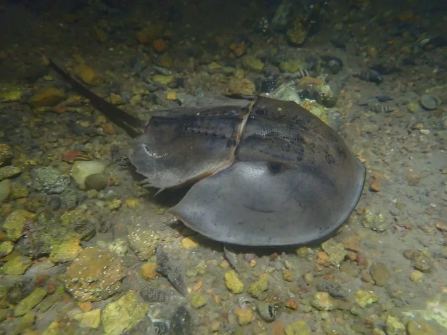

其他无脊椎动物 · 动物界
中国鲎 Tachypleus tridentatus

存活约四亿多年的活化石，蓝色血液可制成检测细菌内毒素的鲎试剂，如今被列为 IUCN 濒危物种和中国国家二级保护动物。
- 分类
- 门节肢动物门纲肢口纲目剑尾目科鲎科属鲎属
- 栖息环境
- 浅海沙泥底与潮间带沙滩，繁殖期上沙滩产卵
- 地理分布
- 中国东南沿海、日本南部到东南亚的浅海
- 保护级别
- IUCN 濒危（EN）；中国国家二级保护野生动物
物种志
中国鲎体长 40–70 cm，身体分为头胸甲、腹甲和剑尾三部分。头胸甲宽阔，呈马蹄形，背面光滑，雌性个体更大；头胸部有 6 对附肢，腹部有 5 对书鳃，剑尾用于在泥沙中撑起身体和翻转。
它生活在浅海沙泥底，以蠕虫、贝类、甲壳动物和死鱼为食。每年夏季，成鲎成群游向高潮线附近的沙滩，雌鲎挖坑产卵，雄鲎附着在其背上受精，幼鲎孵化后在潮间带生活多年才成熟。中国鲎的血液含铜的血蓝蛋白，呈蓝色；血液中的变形细胞遇到细菌内毒素会凝固，人们据此制成鲎试剂，用于药品和医疗器械的安全检验。它分布于中国东南沿海、日本南部和东南亚，因过度捕捞、产卵沙滩破坏和污染而种群下降，现被列为 IUCN 濒危物种和中国国家二级保护野生动物。
形态与习性
- 食性底栖动物，吃蠕虫、贝类、甲壳动物和死鱼
- 体长约 40–70 cm
- 寿命可活 15–20 年（野外估计）
- 繁殖夏季上沙滩产卵，幼鲎在潮间带生活多年
- 血液血蓝蛋白使血液呈蓝色，变形细胞可制成鲎试剂
- 威胁过度捕捞、沙滩破坏和污染导致种群下降
趣味知识
- 中国鲎的血液因含铜的血蓝蛋白而呈蓝色。
- 鲎试剂能检测细菌内毒素，广泛用于药品和医疗器械的安全检验。
- 中国鲎已生存约四亿年，形态变化很小，被称为活化石。